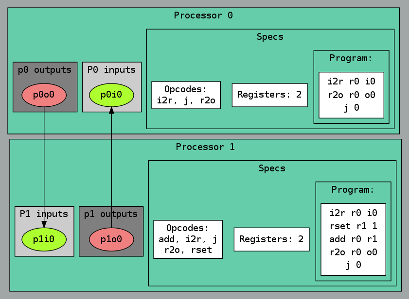
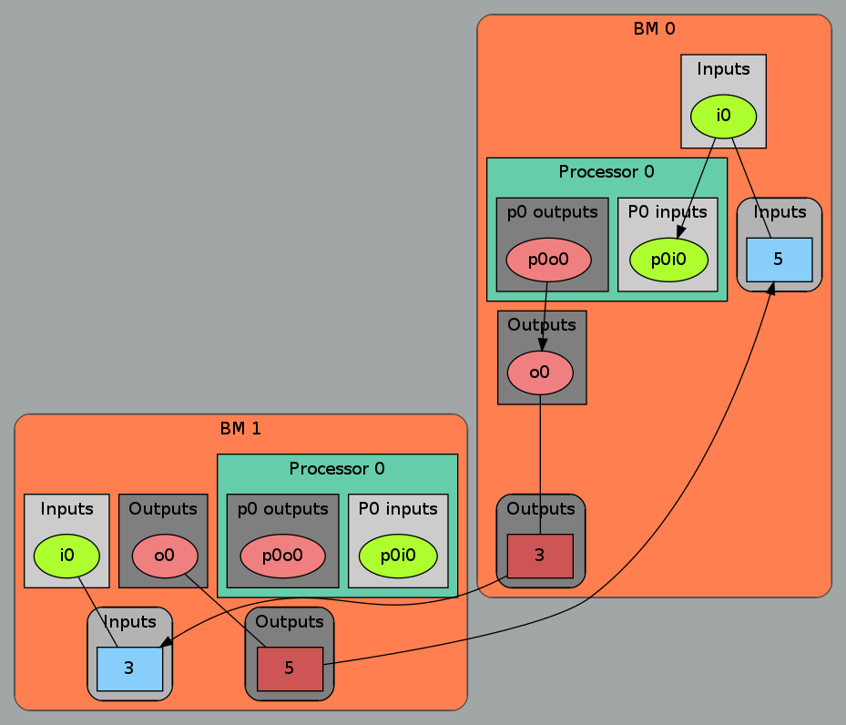

The following code shows a first example of the BondMachine. It is a trival example yet it shows the basic capabilities of the BondMachine architecture and ecosytem. Two Goroutines send an uint8 data value back and forth through IO registers (those created with bondgo.Make), the pong goroutine also increases the value by one before sending it back.
package main
import (
"bondgo"
)
func pong() {
var in0 bondgo.Input
var out0 bondgo.Output
in0 = bondgo.Make(bondgo.Input, 3)
out0 = bondgo.Make(bondgo.Output, 5)
for {
bondgo.IOWrite(out0, bondgo.IORead(in0)+1)
}
bondgo.Void(in0)
bondgo.Void(out0)
}
func main() {
var in0 bondgo.Input
var out0 bondgo.Output
in0 = bondgo.Make(bondgo.Input, 5)
out0 = bondgo.Make(bondgo.Output, 3)
device_0:
go pong()
for {
bondgo.IOWrite(out0, bondgo.IORead(in0))
}
bondgo.Void(in0)
bondgo.Void(out0)
}Compiling the code with the bondgo compiler:
bondgo -input-file pingpong.go -mpmThe toolchain perform the following steps:
The result is a multicore BondMachine:

Changing the device_0 label with device_1 the compiler is instructed to put the two goroutines on different BondMachines. Compiling activating the etherbond protocol
bondgo -input-file pingpong.go -mpm -use-etherbondThe result will be the same as before (in term of behaviour) but using a cluster of two BondMachines connected via the etherbond protocol, each running only one goroutine.
The Multicore became a distributed system:
